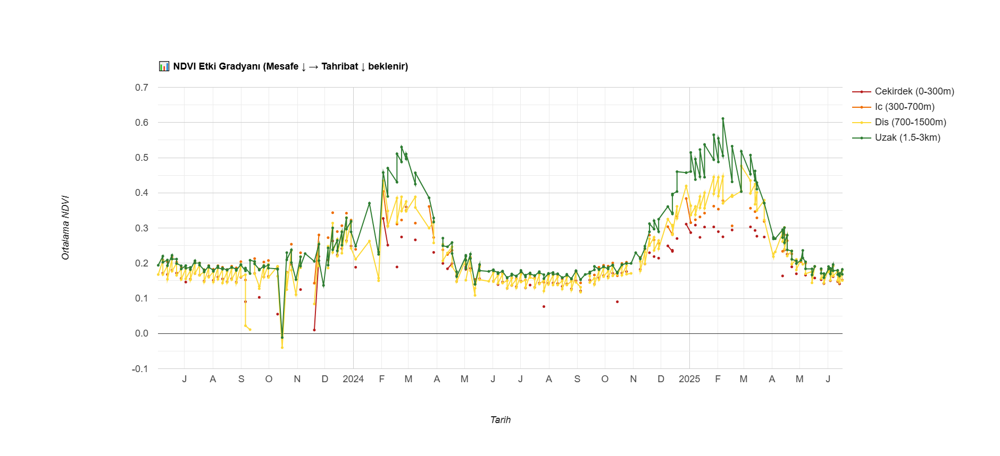
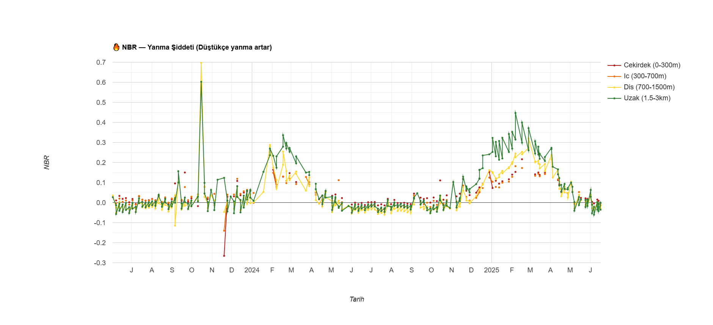
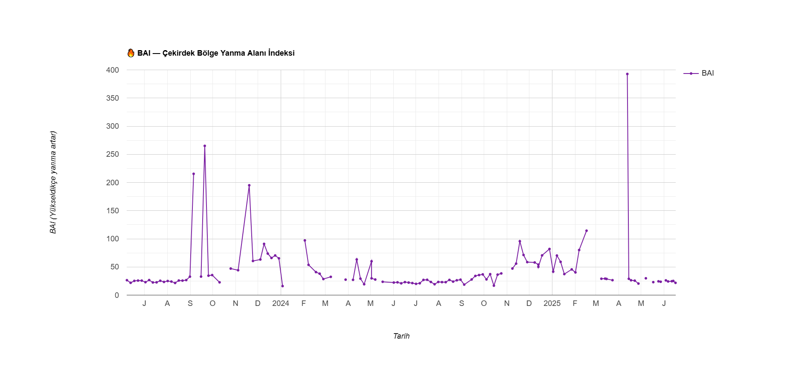
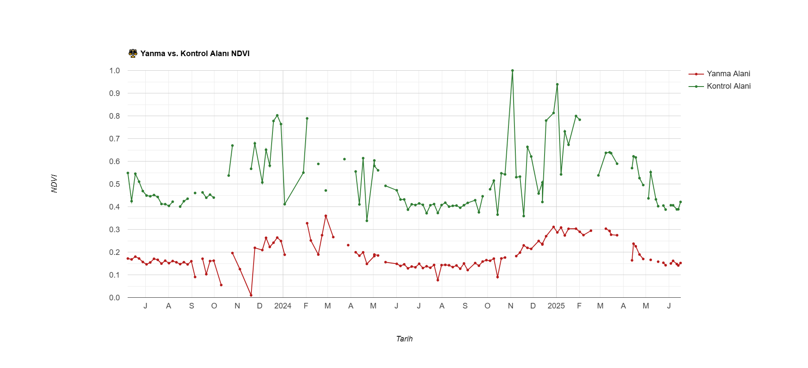
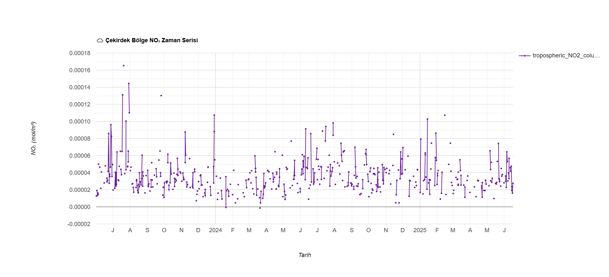
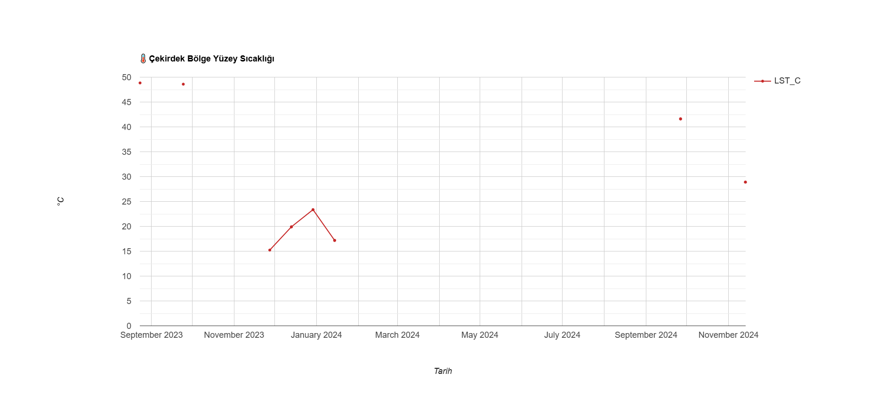

Çoklu-Spektral ve Zaman Serisi Uydu Analiz Bulguları (2023 - 2026)
Spektral veri eşiklerine göre (ΔNDVI < -0.2 ve ΔNBR < -0.1) kesin olarak küle dönen ve ekolojik fonksiyonunu yitiren arazi büyüklüğü.
NASA FIRMS termal sensörleri tarafından çalışma bölgesinde tespit edilen toplam aktif yangın ve anormal yüzey ısısı sayısı.
Bu analiz, kirliliğin kaynağını kantitatif olarak kanıtlar. Çöplük merkezine (0-300m Çekirdek Bölge) yaklaştıkça bitki sağlığı (NDVI) kalıcı olarak düşerken, çöplükten uzaklaştıkça (1.5-3km Uzak Bölge) doğanın canlılığını koruduğu tespit edilmiştir. Bu veri setleri, tahribatın genel iklimsel kuraklıktan değil, doğrudan çöplük odağından kaynaklandığını ispatlamaktadır.

NBR indeksi, uydu görüntülemesinde yangın hasarının saptanması için kullanılan uluslararası bir standarttır. Çekirdek ve iç halkalardaki NBR değerlerinde gözlemlenen ani düşüşler, bitki örtüsündeki değişimin mevsimsel bir kuruma değil, yüksek şiddetli yanma evreleri olduğunu doğrulamaktadır.

BAI algoritması, kömürleşmiş ve kararmış zeminin spektral imzasını ayrıştırmak üzere çalışır. Çekirdek bölgedeki BAI endeksinin zaman serisi boyunca kontrolsüz zirve değerlere ulaşması, alanda doğrudan alevli ve yoğun küllü bir tahribat sürecinin tekrarlandığını teyit etmektedir.

Çöplüğün 6 km kuzeybatısında seçilen, antropojenik etkiden uzak "Kontrol Alanı", mevsimsel döngüsünü sağlıklı bir şekilde sürdürürken, çöplükle çakışan "Yanma Alanı" kalıcı bir hasar profili çizmektedir. Bu metodoloji, bölgedeki biyolojik ölümün doğal sebeplerle gerçekleştiği argümanını bilimsel olarak geçersiz kılmaktadır.

Sentinel-5P spektrometresi ile yapılan ölçümlerde, çöplük alanı üzerindeki Azot Dioksit (NO₂) yoğunluğunun, termal anomalilerin yaşandığı dönemlerle korelasyon gösterdiği belirlenmiştir. Yangınların sadece litosferi değil, atmosferik kaliteyi de doğrudan bozduğu ölçülmüştür.

Landsat uydusunun termal kızılötesi sensörlerinden (TIRS) elde edilen veriler, iklimsel ortalamanın dışında seyreden fokal ısı kaynaklarını işaret etmektedir. Bu veriler, yeraltında biriken çöp gazlarının (depo gazı) neden olduğu içten yanmaların (subsurface fires) bir göstergesi olarak değerlendirilmektedir.
